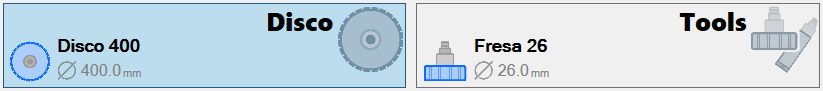
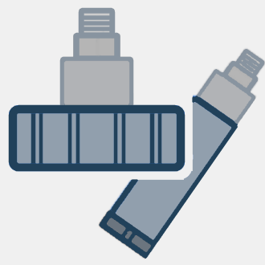
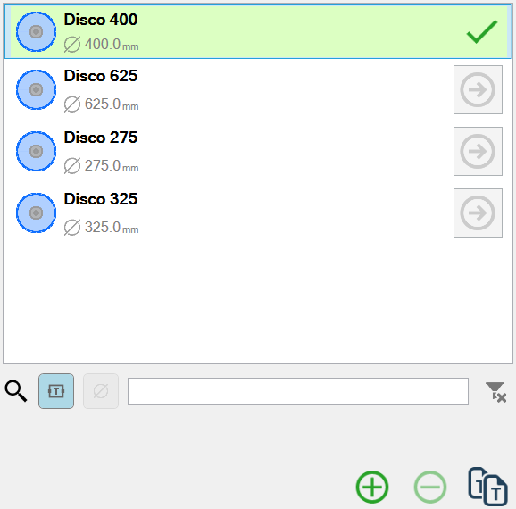
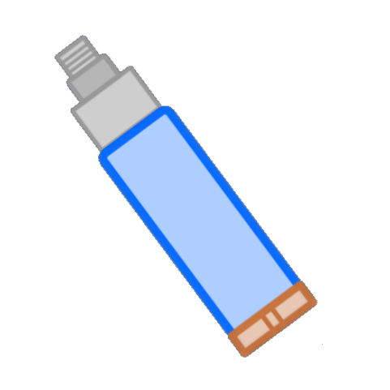
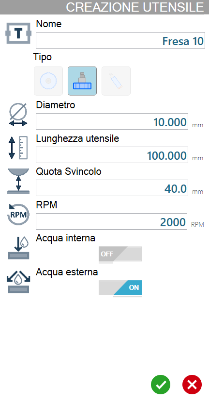
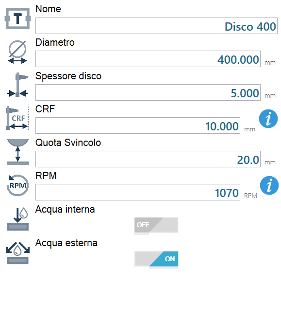
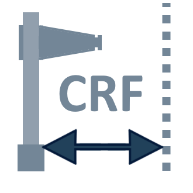
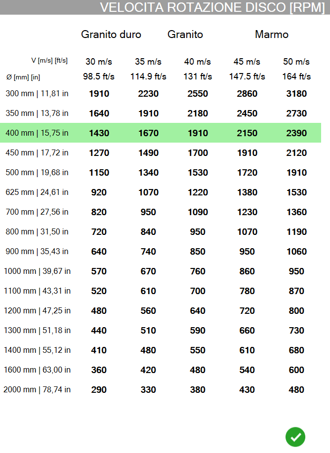
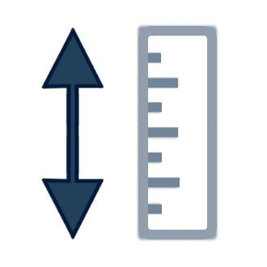
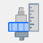

La seguente schermata che consente all’operatore di gestire gli utensili della macchina.

Selezione tipologia utensile
Ogni tipologia di utensile ha un’utensile selezionato, come visibile nella seguente immagine di esempio:

 | Disco |
 | Tools |
Lo sfondo della tipologia “Disco” appare di colore blu chiaro perché è la categoria di utensili attualmente selezionata.
È sufficiente cliccare il rettangolo della tipologia utensile desiderata, per aggiornare la sottostante lista degli utensili con quelli a disposizione per quella tipologia.
Come conseguenza del cambio di tipologia utensile, verrà automaticamente selezionato come mostrato nella precedente immagine di esempio.
Lista utensili presenti per tipologia di utensile selezionata
La lista utensili riportata come esempio nell’immagine successiva dispone di quattro dischi: “Disco 400“, “Disco 625“, “Disco 2755“ e “Disco 325“.
Il primo disco della lista è quello attualmente montato in macchina, ciò è evidenziato dallo sfondo verde chiaro e dalla spunta verde.
Nella sezione di destra, vengono mostrati i parametri relativi all’utensile selezionato.

Elementi dell’elenco
 | Tipologia utensile |
 | Informazioni principali utensile |
 | Forza utensile |
Filtro di ricerca
Nella parte inferiore della lista utensili è presente una barra di ricerca composta dai seguenti elementi:
Gli elementi che compongono il filtro di ricerca sono illustrati di seguito:
 | Pulsante ricerca per nome utensile |
-20250307-155302.png) | Pulsante ricerca per diametro utensile |
Pulsante per annullare il filtro applicato |
Barra inferiore
La barra inferiore della lista utensili offre funzionalità per aggiungere e rimuovere utensili dall’elenco.
Aggiungi utensile | |
 | Elimina utensile |
 | Duplica utensile |
Aggiungi utensile
Tramite questa finestra viene svolta la procedura di creazione di un nuovo utensile. I parametri richiesti cambiano in base alla tipologia dell’utensile che si desidera creare.
La seguente immagine mostra la finestra di creazione di un nuovo utensile per tipologia disponibile:
Disco | Fresa | Foretto |
|  |  |
 |  |  |
Lista parametri per utensile selezionato
In questa lista sono riportati tutti i parametri relativi all’utensile attualmente selezionato.
Ogni variazione della selezione dell’utensile attualmente selezionato permetterà all’operatore di visualizzare i valori aggiornati per l’utensile desiderato e di apportare eventualmente modifiche a ogni valore.
La lista dei parametri e i relativi valori verranno inoltre aggiornati quando viene selezionata una diversa tipologia di utensile (Disco / Tools), mostrando i valori dell’utensile selezionato per ciascuna categoria.
Parametri disco
Di seguito vengono mostrati i parametri associati ad un disco.

 | Nome |
 | Diametro |
 | Spessore disco |
 | CRF - Centro Rotazione Flangia |
 | Quota svincolo |
 | RPM |
 | Acqua interna |
 | Acqua esterna |
Velocità rotazione disco
Alla destra del parametro RPM è situato il seguente pulsante:
 | Informazioni RPM |
In questa finestra viene mostrata una tabella contenente le conversioni da velocità di rotazione ad RPM in base al diametro del disco selezionato.
Vengono evidenziati in verde i valori consigliati per il disco selezionato.

Parametri fresa e foretto
Di seguito vengono mostrati parametri relativi ad utensili quali frese e foretti.

 | Lunghezza utensile |
Tastatura utensile
Se la macchina dispone dello strumento opzionale per la tastatura dell’utensile, è possibile attivare la procedura da questo pannello.
Permette di avviare un ciclo tramite cui è possibile calcolare il diametro, nel caso di disco, o la lunghezza, per fresature e foretti.
Pulsanti
Nella parte destra del pannello è presente uno dei seguenti pulsanti.
 | Avvia tastatura disco |
 | Avvia tastatura utensile secondario |
Il pulsante per la tastatura del disco è disponibile solamente all’interno della sezione “Disco“ del pannello.
Il pulsante per la tastatura dell’utensile secondario è disponibile solamente all’interno della sezione “Tools“ del pannello.
Procedura
Per misurare il diametro del disco, oppure la lunghezza del foretto/fresa attualmente montato in macchina, premere il pulsante corrispondente nella sezione di destra del pannello.
Al termine del ciclo, il programma aggiorna automaticamente il dato corrispondente alla misura dell’utensile tastato.

Altri Pulsanti
In basso a sinistra della schermata è presente il seguente pulsante:
 | Passa al pannello “Parametri di lavorazione della lastra“ |